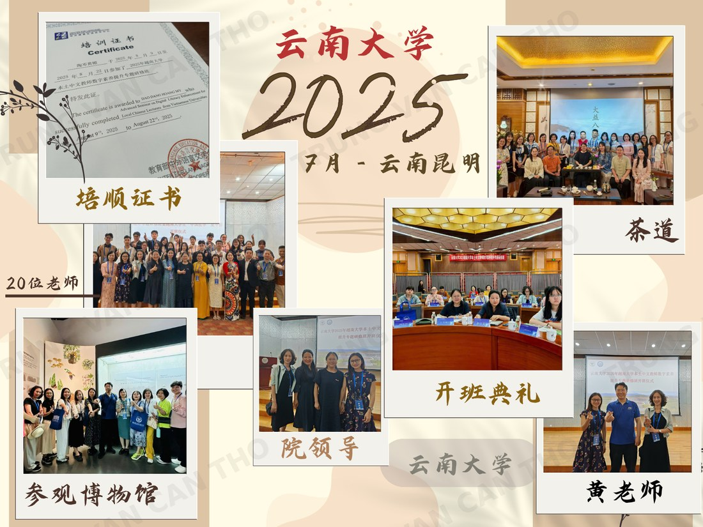

Tập huấn chuyên sâu 14 ngày tại Đại học Vân Nam (云南大学)
Cô Nương và cô My tham gia khóa tập huấn dành cho giáo viên Hán ngữ cùng 20 giáo viên Việt Nam từ Bắc vào Nam.

- Xu hướng mới trong dạy tiếng Trung quốc tế: tích hợp AI, dữ liệu lớn, công nghệ số.
- Dùng AI để thiết kế bài giảng, chấm chữa bài viết, tạo tài nguyên dạy học.
- Giao lưu với giáo sư, chuyên gia từ ĐH Vân Nam, ĐH Sư phạm Vân Nam, ĐH Ngôn ngữ Bắc Kinh, ĐH Ngoại ngữ Bắc Kinh, ĐH Sư phạm Tân Cương, ĐH Sư phạm Liêu Ninh…
Đại học Vân Nam (云南大学)